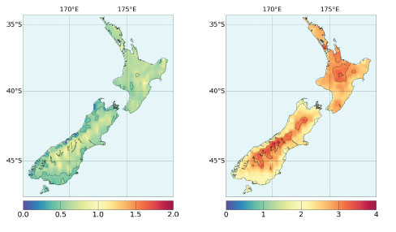

Global Warming in New Zealand
For many environmentalists, the world seems to be getting warmer. As the nearest country of South Polar Region, New Zealand has maintained an upward trend in its average temperature in the past few years. However, the temperature in New Zealand will go up 4oC in the next century while the polar region will go up more than 6oC. The different pictures of temperature stem from its surrounding ocean which acts like the air conditioner. Thus New Zealand is comparatively fortunate.
Scientifically speaking, this temperature phenomenon in New Zealand originated from what researchers call “SAM” (Southern Annular Mode), which refers to the wind belt that circles the Southern Oceans including New Zealand and Antarctica. Yet recent work has revealed that changes in SAM in New Zealand have resulted in a weakening of moisture during the summer, and more rainfall in other seasons. A bigger problem may turn out to be heavier droughts for agricultural activities because of more water loss from soil, resulting in poorer harvest before winter when the rainfall arrive too late to rescue.
Among all the calamities posed be drought, moisture deficit ranks the first. Moisture deficit is the gap between the water plants need during the growing season and the water the earth can offer. Measures of moisture deficit were at their highest since the 1970s in New Zealand. Meanwhile, ecological analyses clearly show moisture deficit is imposed at different growth stage of crops. If moisture deficit occurs around a crucial growth stage, it will cause about 22% reduction in grain yield as opposed to moisture deficit at vegetative phase.
Global warming is not only affecting agriculture production. When scientists say the country’s snow pack and glaciers are melting at an alarming rate due to global warming, the climate is putting another strain on the local places. For example, when the development of global warming is accompanied by the falling snow line, the local skiing industry comes into a crisis. The snow line may move up as the temperature goes up, and then the snow at the bottom will melt earlier. Fortunately, it is going to be favorable for the local skiing industry to tide over tough periods since the quantities of snowfall in some areas are more likely to increase.
What is the reaction of glacier region? The climate change can be reflected in the glacier region in southern New Zealand or land covered by ice and snow. The reaction of a glacier to a climatic change involves a complex chain of processes. Over time periods of years to several decades, cumulative changes in mass balance cause volume and thickness changes, which will affect the flow of ice via altered internal deformation and basal sliding. This dynamic reaction finally leads to glacier length changes, the advance or retreat of glacier tongues. Undoubtedly, glacier mass balance is a more direct signal of annual atmospheric conditions.
The latest research result of National Institute of Water and Atmospheric (NIWA) Research shows that glaciers line keeps moving up because of the impacts of global warming. Further losses of ice can be reflected in Mt. Cook Region. By 1996, a 14 km long sector of the glacier had melted down forming a melt lake (Hooker Lake) with a volume. Melting of the glacier front at a rate of 40 m/yr will cause the glacier to retreat at a rather uniform rate. Therefore, the lake will continue to grow until it reaches the glacier bed.
A direct result of the melting glaciers is the change of high tides the serves the main factor for sea level rise. The trend of sea level rise will bring a threat to the groundwater system for its hyper-saline groundwater and then pose a possibility to decrease the agricultural production. Many experts believe that the best way to counter this trend is to give a longer-term view of sea level change in New Zealand. Indeed, the coastal boundaries need to be upgraded and redefined.
There is no doubt that global warming has affected New Zealand in many aspects. The emphasis on the global warming should be based on the joints efforts of local people and experts who conquer the tough period. For instance, farmers are taking a long term, multi-generational approach to adjust the breeds and species according to the temperature. Agriculturists also find ways to tackle the problems that may bring to the soil. In broad terms, going forward, the systemic resilience that’s been going on a long time in the ecosystem will continue.
How about animals’ reaction? Experts have surprisingly realized that animals have unconventional adaptation to global warming. A study has looked at sea turtles on a few northern beaches in New Zealand and it is very interesting to find that sea turtles can become male or female according to the temperature. Further researches will try to find out how rising temperatures would affect the ratio of sex reversal in their growth. Clearly, the temperature of the nest plays a vital role in the sexes of the baby turtles.
Tackling the problems of global warming is never easy in New Zealand, because records show the slow process of global warming may have a different impact on various regions. For New Zealand, the emission of carbon dioxide only accounts for 0.5% of the world’s total, which has met the governmental standard.
However, New Zealand’s effort counts only a tip of the iceberg. So far, global warming has been a world issue that still hangs in an ambiguous future.
Questions 1-6
Choose the correct letter A, B, C or D.
Write the correct letter in boxes 1-6 on your answer sheet.
1. What is the main idea of the first paragraph?
A The temperature in the polar region will increase less than that in New Zealand in the next century.
B The weather and climate of New Zealand is very important to its people because of its close location to the polar region.
C The air condition in New Zealand will maintain a high quality because of the ocean.
D The temperature of New Zealand will increase less than that of other region in the next 100 years because it is surrounded by sea.
2. What is one effect of the wind belt that circles the Southern Oceans?
A New Zealand will have more moisture in winds in summer.
B New Zealand needs to face droughts more often in hotter months in a year.
C Soil water will increase as a result of weakening moisture in the winds
D Agricultural production will be reduced as a result of more rainfall in other seasons.
3. What does “moisture deficit” mean to the grain and crops?
A The growing condition will be very tough for crops.
B The growing season of some plants can hardly be determined.
C There will be a huge gap between the water plants needed and the water the earth can offer.
D The soil of the grain and crops in New Zealand reached its lowest production since 1970s.
4. What changes will happen to skiing industry due to the global warming phenomenon?
A The skiing station may lower the altitude of skiing
B Part of the skiing station needs to move to the north.
C The snowfall may increase in part of skiing station.
D The local skiing station may likely to make a profit because of the snowfall increase.
5. Cumulative changes over a long period of time in mass balance will lead to
A Alterations is the volume and thickness of glaciers.
B Faster changes in internal deformation and basal sliding.
C Larger length of glaciers.
D Retreat of glacier tongues as a result of change in annual atmospheric conditions.
6. Why does the writer mention NIWA in the sixth paragraph?
A To use a particular example to explain the effects brought by glacier melting.
B To emphasize the severance of the further loss of ice in Mt. Cook Region.
C To alarm the reader of melting speed of glaciers at a uniform rate.
D To note the lake in the region will be disappear when it reach the glacier bed.
Questions 7-9
Complete the summary below.
Choose NO MORE THAN TWO WORDS from the passage for each answer.
Write your answer in boxes 7-9 on your answer sheet.
Questions 10-14
Do the following statements agree with the claims of the writer in Reading Passage?
In boxes 10-14 on your answer sheet write
YES if the statement agree with the claims of the writer
NO if the statement contradicts the claims of the writer
NOT GIVEN if it is impossible to say what the writer thinks about this
10 Farmers are less responsive to climate change than agriculturists.
11 Agricultural sector is too conservative and resistant to deal with climate change.
12 Turtle is vulnerable to climate change.
13 The global warming is going slowly, and it may have different effects on different areas in New Zealand.
14 New Zealand must cut carbon dioxide emission if they want to solve the problem of global warming.
---End of the Test---
Please Submit to view your score, solution and explanations.